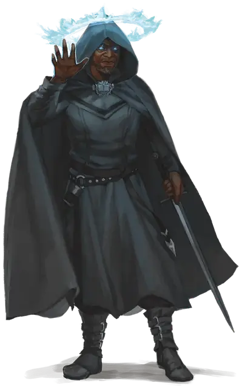

Инквизитор огня разума
Inquisitor of the Mind Fire
Средний или Маленький Гуманоид, Принципиальный Нейтральный

Класс Защиты 16 Инициатива +2 (12)
Хиты 104 (16к8 + 32)
Скорость 30 футов
| мод | спас | ||
|---|---|---|---|
| СИЛ | 10 | +0 | +0 |
| ЛОВ | 14 | +2 | +2 |
| ТЕЛ | 15 | +2 | +2 |
| мод | спас | ||
|---|---|---|---|
| ИНТ | 17 | +3 | +6 |
| МДР | 16 | +3 | +6 |
| ХАР | 21 | +5 | +8 |
Иммунитеты Испуганный, Очарованный
Чувства пассивное Восприятие 16, Истинное зрение 30 футов
Языки Общий плюс ещё два языка
Опасность 8 (3 900 опыта; БВ +3)
Действия
Мультиатака. Инквизитор совершает три атаки Посеребрённым длинным мечом. Он может заменить любую из этих атак использованием Огня разума, а также одну атаку — использованием Сотворения заклинаний (Удержание монстра), если оно доступно.
Посеребрённый длинный меч. Бросок рукопашной атаки: +8, досягаемость 5 фт. Попадание: 14 (2к8 + 5) Рубящего урона плюс 4 (1к8) Психического урона, и цель Испугана до начала следующего хода инквизитора.
Огонь разума. Спасбросок Интеллекта: Сл 16, одно видимое инквизитором существо в пределах 120 футов. Провал: 9 (1к8 + 5) Психического урона, и цель Ошеломлена до начала следующего хода инквизитора.
Приказ инквизитора (Перезарядка 5–6). Спасбросок Мудрости: Сл 16, все видимые инквизитором существа по его выбору в пределах 60 футов. Провал: Цель Очарована до начала следующего хода инквизитора. В ход Очарованной цели инквизитор может телепатически управлять перемещением цели и заставить её либо совершить действие Атака или Рывок, либо не совершать никаких действий.
Сотворение заклинаний. Инквизитор огня разума сотворяет одно из следующих заклинаний, не нуждаясь в компонентах заклинания (заклинательная характеристика — Харизма, Сл спасброска заклинаний 16):
Неограниченно: Волшебная рука, Невидима, Обнаружение магии, Обнаружение мыслей, Послание, Рассеивание магии
1/день каждое: Изменение памяти, Удержание монстра
Бонус мастерства +3
Среда обитания Любая
Сокровища Любые
Ульмистские инквизиторы
Ревностные искоренители злых помыслов
«Зло таится повсюду. Силою разума мы отыщем его, проникнем в самую его суть и уничтожим без следа». С этими словами одарённый психической силой жрец Ульмед основал Ульмистскую инквизицию — орден псиоников-дознавателей, стремящихся вскрывать и выжигать зло, гнездящееся в глубинах сердец. Из погрязшего в пороке города Малитейн, что на Материальном плане, инквизиция рассылает своих служителей по всей мультивселенной, дабы противостоять деяниям зловещих культов, кошмарам, попирающим саму действительность, и злу, присущему смертным. Отдельные секты инквизиции действуют и в Доменах Ужаса, работая тайными ячейками или проникая в иные конфессии, например в церковь Эзры.
Ульмистская инквизиция делится на три ордена, носящих имена сподвижников Ульмеда: орден Козимы, орден Анселя и орден Тристиана. Каждый орден владеет собственной псионической силой, и у каждого на гербе — собственный символ. Иные инквизиторы поддерживают дух товарищического соперничество с собратьями из других орденов, но большинство отбрасывают обиды — хотя бы на время — ради совместной борьбы со злом.
Орден Козимы подчиняет себе «огонь разума» — так они называют пламя мысли, что пылает в сознании каждого. Инквизиторы этого ордена читают мысли, перекраивают воспоминания и подчиняют непокорных своей психической волей. Символом ордена служит пылающее око.